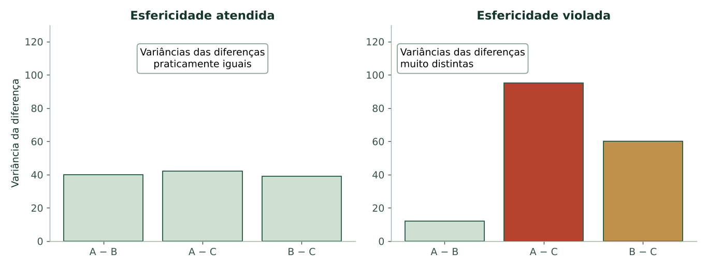
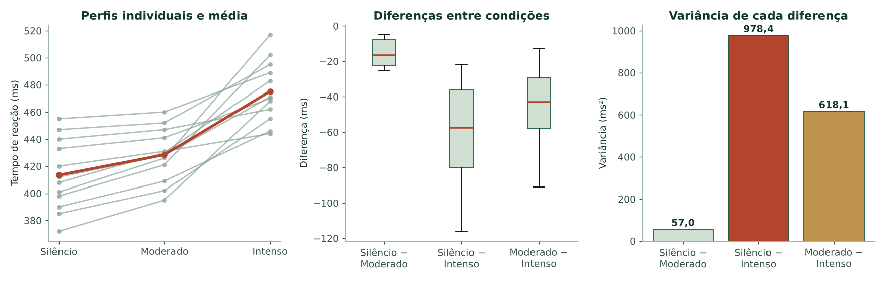

Mauchly (esfericidade)
Verifica a esfericidade, condição exigida pela ANOVA de medidas repetidas com três ou mais condições.
Comece por aqui
Quando as mesmas pessoas (ou peças, ou parcelas) são medidas em três ou mais condições, a ANOVA de medidas repetidas supõe algo específico sobre as diferenças entre essas condições: todas devem ter a mesma variabilidade. Essa suposição chama-se esfericidade, e o teste de Mauchly é o procedimento clássico para avaliá-la.
John W. Mauchly, que publicou o teste em 1940, era físico e ficou mais conhecido por outro trabalho: foi um dos projetistas do ENIAC, um dos primeiros computadores eletrônicos de uso geral.
| Situação | Faz sentido? |
|---|---|
| ANOVA de medidas repetidas com 3 ou mais condições | Sim, é o uso típico |
| Fator intraunidades de uma ANOVA mista | Sim |
| Apenas duas condições (antes e depois) | Não: há uma única diferença, e a esfericidade vale automaticamente |
| Grupos independentes | Não: use Levene–Brown–Forsythe |
O que é o teste
Com \(k\) condições medidas nas mesmas unidades, há \(k(k-1)/2\) diferenças possíveis entre pares de condições. A esfericidade afirma que as variâncias de todas essas diferenças são iguais. Mauchly (1940) propôs verificar isso transformando os dados em \(k-1\) contrastes ortonormais e testando se a matriz de covariâncias desses contrastes é proporcional à identidade, isto é, “esférica”.

A simetria composta (variâncias iguais e covariâncias iguais) é uma condição mais forte: ela implica esfericidade, mas a esfericidade pode valer sem ela.
Pressupostos e como verificá-los
| Pressuposto | Por que importa | Como verificar |
|---|---|---|
| Normalidade multivariada das medidas | A distribuição de W foi deduzida sob normalidade; o teste é sensível a desvios. | Teste de Mardia e gráficos Q–Q das diferenças entre condições. |
| Unidades independentes entre si | A dependência permitida é apenas dentro de cada unidade. | Delineamento do estudo. |
| Três ou mais condições | Com duas condições não há o que testar. | Número de colunas de medidas. |
| Mais unidades do que condições | Com n pequeno, a matriz de covariâncias é mal estimada e o poder é baixo. | nrow(dados) e ncol(dados). |
| Dados completos | O teste usa a matriz de covariâncias das unidades com todas as medidas. | colSums(is.na(dados)). |
Hipóteses e estatística de teste
Em que:
- \(W\)
- estatística de Mauchly, entre 0 e 1
- \(k\)
- número de condições (medidas repetidas)
- \(n\)
- número de unidades (participantes)
- \(\mathbf S\)
- matriz de covariâncias amostral das \(k\) medidas
- \(\mathbf C\)
- matriz \((k-1) imes k\) de contrastes ortonormais (linhas ortogonais entre si, de norma 1 e soma zero)
- \(\boldsymbol\Sigma\)
- matriz de covariâncias populacional
- \(\lambda\)
- constante positiva desconhecida (variância comum dos contrastes)
- \(\det,\ \operatorname{tr}\)
- determinante e traço (soma da diagonal) de uma matriz
Exemplo numérico, passo a passo (k = 3, n = 12)
Nos dados do exemplo desta ficha, a matriz de covariâncias dos dois contrastes ortonormais é
Determinante: \(28{,}50\times 522{,}65-104{,}02^2\approx 4075\). Traço: \(28{,}50+522{,}65=551{,}15\).
\(W=\dfrac{4075}{(551{,}15/2)^2}=\dfrac{4075}{75\,942}=0{,}0537\).
Com \(p=2\) e \(n-1=11\): fator \(=1-\dfrac{8+2+2}{6\times2\times11}=0{,}9091\); \(\ln W=-2{,}925\).
\(\chi^2=-11\times0{,}9091\times(-2{,}925)=29{,}25\), com \(2\) g.l. ⇒ \(p=4{,}4\times10^{-7}\).
Propriedades e valor-p
- \(0<W\leq1\); \(W=1\) quando os contrastes têm variâncias iguais e covariâncias nulas.
- O valor-p é \(P(\chi^2_{gl}\geq\chi^2_{obs})\): rejeita-se a esfericidade para valores pequenos de \(W\).
- O resultado não depende de qual conjunto de contrastes ortonormais é escolhido.
- Não há intervalo de confiança para \(W\). A magnitude da violação é descrita pelo épsilon (abaixo).
Épsilon: o tamanho da violação
Sob esfericidade, \(\varepsilon=1\). Quanto menor, maior a violação. A correção consiste em multiplicar os dois graus de liberdade do teste F por \(\hat\varepsilon\). No exemplo, \(\hat\varepsilon_{GG}=551{,}15^2/(2\times295\,616)=0{,}514\), muito perto do limite inferior \(1/2\).
Como interpretar os resultados
| Resultado | Leitura | Conduta |
|---|---|---|
| p < 0,05 | Há evidência de violação da esfericidade. | Use F com correção de Greenhouse–Geisser (ou Huynh–Feldt), MANOVA ou modelo misto. |
| p ≥ 0,05 | Sem evidência suficiente de violação. | Não prova esfericidade; com n pequeno o poder é baixo. Observe o épsilon. |
| ε̂ > 0,75 | Violação leve. | Huynh–Feldt costuma ser recomendada (Greenhouse–Geisser fica conservadora). |
| ε̂ ≤ 0,75 | Violação moderada ou forte. | Greenhouse–Geisser. |
Reporte \(W\), o qui-quadrado, os graus de liberdade, o valor-p e o épsilon utilizado na correção.
Como executar no R e em Python
Onde executar o código em Python
Não é preciso instalar nada: o Google Colab é um computador na nuvem, gratuito, que executa Python pelo navegador e já traz as bibliotecas usadas aqui (numpy, scipy e matplotlib).
mauchly.test() e anova() pertencem ao pacote stats, já instalado com o R. Os dados entram em formato largo: uma linha por unidade e uma coluna por condição. Para dados em formato longo, rstatix::anova_test() e ez::ezANOVA() apresentam o teste de Mauchly e as correções na mesma saída.
modelo <- lm(as.matrix(dados) ~ 1) # "dados": uma coluna por condição
mauchly.test(modelo, X = ~ 1)
anova(modelo, X = ~ 1, test = "Spherical")
Exemplo de aplicação
Contexto dos dados
Doze participantes realizaram uma tarefa de atenção em três condições de ruído ambiente: silêncio, ruído moderado e ruído intenso. A resposta é o tempo de reação, em milissegundos. Os dados são fictícios, criados para esta ficha. Queremos comparar as três condições por ANOVA de medidas repetidas e, antes, avaliar a esfericidade.
Código em R
# Mauchly (esfericidade): exemplo completo ----
# Pacote: apenas o stats (já vem com o R).
# 1. Dados: tempo de reação (ms) de 12 participantes em três condições de ruído
dados <- data.frame(
silencio = c(412, 385, 440, 398, 455, 372, 420, 401, 433, 390, 447, 408),
moderado = c(428, 402, 447, 421, 460, 395, 431, 426, 441, 409, 452, 430),
intenso = c(471, 455, 462, 502, 489, 468, 444, 517, 470, 446, 495, 483))
colMeans(dados)
# 2. Variâncias das diferenças entre pares de condições
c(sil_mod = var(dados$silencio - dados$moderado),
sil_int = var(dados$silencio - dados$intenso),
mod_int = var(dados$moderado - dados$intenso))
# 3. Teste de Mauchly (modelo multivariado apenas com intercepto)
modelo <- lm(as.matrix(dados) ~ 1)
mauchly.test(modelo, X = ~ 1)
# 4. ANOVA de medidas repetidas com as correções de Greenhouse-Geisser e Huynh-Feldt
anova(modelo, X = ~ 1, test = "Spherical")
# 5. Gráficos: perfis individuais e diferenças entre condições
par(mfrow = c(1, 2))
matplot(t(dados), type = "b", pch = 19, lty = 1, col = "gray50", xaxt = "n",
xlab = "Condição", ylab = "Tempo de reação (ms)")
axis(1, at = 1:3, labels = names(dados))
lines(colMeans(dados), col = "red", lwd = 3)
boxplot(list("S - M" = dados$silencio - dados$moderado,
"S - I" = dados$silencio - dados$intenso,
"M - I" = dados$moderado - dados$intenso),
col = "gray85", ylab = "Diferença (ms)")
par(mfrow = c(1, 1))
A mesma análise em Python, com os resultados
Cole o código em um notebook do Google Colab ↗ e execute com Shift+Enter. Os valores abaixo são a saída desse código.
# Bibliotecas: numpy, scipy e matplotlib (já instaladas no Google Colab)
import numpy as np
from scipy import stats
import matplotlib.pyplot as plt
# Dados: tempo de reação (ms) de 12 participantes em três condições de ruído
dados = np.array([
[412, 428, 471], [385, 402, 455], [440, 447, 462], [398, 421, 502],
[455, 460, 489], [372, 395, 468], [420, 431, 444], [401, 426, 517],
[433, 441, 470], [390, 409, 446], [447, 452, 495], [408, 430, 483]], dtype=float)
condicoes = ["Silêncio", "Ruído moderado", "Ruído intenso"]
n, k = dados.shape
# 1. Médias e variâncias das diferenças entre pares de condições
print("Médias por condição:", np.round(dados.mean(axis=0), 2))
for i in range(k):
for j in range(i + 1, k):
d = dados[:, i] - dados[:, j]
print(f"Var({condicoes[i]} - {condicoes[j]}) = {d.var(ddof=1):.2f}")
# 2. Contrastes ortonormais (Helmert) e matriz de covariâncias transformada
C = np.array([[1, -1, 0], [1, 1, -2]], dtype=float)
C = C / np.sqrt((C**2).sum(axis=1, keepdims=True))
S = np.cov(dados, rowvar=False)
Sc = C @ S @ C.T
print("\nMatriz C S C':\n", np.round(Sc, 2))
# 3. Estatística W de Mauchly e aproximação qui-quadrado
p = k - 1
W = np.linalg.det(Sc) / (np.trace(Sc) / p)**p
gl = p * (p + 1) // 2 - 1
rho = 1 - (2*p**2 + p + 2) / (6 * p * (n - 1))
X2 = -(n - 1) * rho * np.log(W)
valor_p = stats.chi2.sf(X2, gl)
print(f"\nMauchly: W = {W:.5f}, qui-quadrado = {X2:.4f}, gl = {gl}, p-valor = {valor_p:.2e}")
# 4. Épsilons de correção dos graus de liberdade
eps_gg = np.trace(Sc)**2 / (p * np.trace(Sc @ Sc))
eps_hf = min(1, (n * p * eps_gg - 2) / (p * (n - 1 - p * eps_gg)))
print(f"Greenhouse-Geisser = {eps_gg:.4f} | Huynh-Feldt = {eps_hf:.4f} | limite inferior = {1/p:.4f}")
# 5. ANOVA de medidas repetidas com e sem correção
gm = dados.mean()
SQ_cond = n * np.sum((dados.mean(axis=0) - gm)**2)
SQ_suj = k * np.sum((dados.mean(axis=1) - gm)**2)
SQ_res = np.sum((dados - gm)**2) - SQ_cond - SQ_suj
gl1, gl2 = k - 1, (k - 1) * (n - 1)
F = (SQ_cond / gl1) / (SQ_res / gl2)
print(f"\nANOVA: F({gl1}, {gl2}) = {F:.3f}, p-valor = {stats.f.sf(F, gl1, gl2):.2e}")
print(f"Com Greenhouse-Geisser: gl = ({gl1*eps_gg:.2f}, {gl2*eps_gg:.2f}), p-valor = {stats.f.sf(F, gl1*eps_gg, gl2*eps_gg):.2e}")
# 6. Gráfico: perfis individuais e diferenças entre condições
fig, ax = plt.subplots(1, 2, figsize=(11, 4))
ax[0].plot(dados.T, color="gray", alpha=0.6, marker="o")
ax[0].plot(dados.mean(axis=0), color="red", lw=3, marker="o")
ax[0].set_xticks(range(k)); ax[0].set_xticklabels(condicoes); ax[0].set_ylabel("Tempo de reação (ms)")
difs = [dados[:, 0] - dados[:, 1], dados[:, 0] - dados[:, 2], dados[:, 1] - dados[:, 2]]
ax[1].boxplot(difs); ax[1].set_xticks([1, 2, 3]); ax[1].set_xticklabels(["S - M", "S - I", "M - I"])
ax[1].set_ylabel("Diferença (ms)")
plt.show()
Resultados da execução
Médias por condição: [413.42 428.5 475.17] Var(Silêncio - Ruído moderado) = 56.99 Var(Silêncio - Ruído intenso) = 978.39 Var(Ruído moderado - Ruído intenso) = 618.06 Matriz C S C': [[ 28.5 104.02] [104.02 522.65]] Mauchly: W = 0.05365, qui-quadrado = 29.2533, gl = 2, p-valor = 4.44e-07 Greenhouse-Geisser = 0.5138 | Huynh-Feldt = 0.5180 | limite inferior = 0.5000 ANOVA: F(2, 22) = 45.130, p-valor = 1.64e-08 Com Greenhouse-Geisser: gl = (1.03, 11.30), p-valor = 2.67e-05

| Elemento | Valor | Leitura |
|---|---|---|
| W de Mauchly | 0,0537 | Muito distante de 1. |
| Qui-quadrado (2 g.l.) | 29,25 | Valor-p = 4,4 × 10⁻⁷: rejeita-se a esfericidade. |
| Épsilon de Greenhouse–Geisser | 0,514 | Próximo do limite inferior (0,500): violação forte. |
| Épsilon de Huynh–Feldt | 0,518 | Praticamente igual ao anterior. |
| F sem correção | F(2; 22) = 45,13 | p = 1,6 × 10⁻⁸ |
| F com Greenhouse–Geisser | F(1,03; 11,30) = 45,13 | p = 2,7 × 10⁻⁵ |
Leitura: a esfericidade é claramente violada. A estatística F é a mesma, mas os graus de liberdade corrigidos caem de (2; 22) para (1,03; 11,30) e o valor-p aumenta cerca de mil vezes. Aqui a conclusão não muda (o efeito do ruído é muito forte), mas em efeitos menores a correção pode separar um resultado significativo de um não significativo.
Erros comuns
| Erro | Como evitar |
|---|---|
| Aplicar o teste com duas condições | Não há esfericidade a testar; use o teste t pareado. |
| Tratar p alto como garantia de esfericidade | Com n pequeno o poder é baixo; reporte o épsilon e considere corrigir sempre. |
| Ignorar a normalidade | O teste é sensível a caudas pesadas e outliers; examine as diferenças. |
| Confundir com homogeneidade entre grupos | Esfericidade é uma condição dentro das unidades; entre grupos usa-se Levene ou M de Box. |
| Reportar apenas o F sem correção após rejeitar | Informe os graus de liberdade corrigidos e o épsilon. |
Alternativas e fluxo de trabalho
| Procedimento | Quando preferir |
|---|---|
| Correção de Greenhouse–Geisser | Violação moderada ou forte (ε̂ ≤ 0,75); pode ser aplicada por padrão. |
| Correção de Huynh–Feldt | Violação leve (ε̂ > 0,75). |
| MANOVA sobre os contrastes | Não exige esfericidade; requer n bem maior que o número de condições. |
| Modelos lineares mistos | Permitem outras estruturas de covariância e dados faltantes. |
| Teste de Friedman | Dados ordinais ou forte afastamento da normalidade. |
- Organize os dados em formato largo e desenhe os perfis individuais.
- Calcule as variâncias das diferenças entre pares de condições.
- Aplique o teste de Mauchly e obtenha os épsilons.
- Reporte o F com a correção adequada; se a violação for forte ou houver dados faltantes, considere MANOVA ou modelo misto.
Referências desta ficha
- MAUCHLY, John W. Significance test for sphericity of a normal n-variate distribution. The Annals of Mathematical Statistics, v. 11, n. 2, p. 204-209, 1940.
- GREENHOUSE, Samuel W.; GEISSER, Seymour. On methods in the analysis of profile data. Psychometrika, v. 24, n. 2, p. 95-112, 1959.
- HUYNH, Huynh; FELDT, Leonard S. Estimation of the Box correction for degrees of freedom from sample data in randomized block and split-plot designs. Journal of Educational Statistics, v. 1, n. 1, p. 69-82, 1976.
- MAXWELL, Scott E.; DELANEY, Harold D.; KELLEY, Ken. Designing experiments and analyzing data: a model comparison perspective. 3. ed. New York: Routledge, 2018.
- R CORE TEAM. R: a language and environment for statistical computing. Vienna: R Foundation for Statistical Computing, 2026. Disponível em: https://www.r-project.org/. (Funções
mauchly.testeanova.mlm, pacotestats.) - POSIT TEAM. RStudio: integrated development environment for R. Boston: Posit Software, PBC. Disponível em: https://posit.co/download/rstudio-desktop/.
- VIRTANEN, Pauli et al. SciPy 1.0: fundamental algorithms for scientific computing in Python. Nature Methods, v. 17, p. 261-272, 2020. DOI: 10.1038/s41592-019-0686-2. (Funções do módulo
scipy.stats.) - HARRIS, Charles R. et al. Array programming with NumPy. Nature, v. 585, p. 357-362, 2020. DOI: 10.1038/s41586-020-2649-2.
- HUNTER, John D. Matplotlib: a 2D graphics environment. Computing in Science & Engineering, v. 9, n. 3, p. 90-95, 2007.
- GOOGLE. Google Colaboratory. Disponível em: https://colab.research.google.com/.
- Os dados do exemplo são fictícios e foram criados pelo autor. As figuras desta ficha foram elaboradas pelo autor.

Prof. Dr. Cássius Henrique Xavier Oliveira
Professor · ICTIN/UFLA · Estatística, Confiabilidade e Ciência de Dados.
Conheça minha trajetória e projetos →